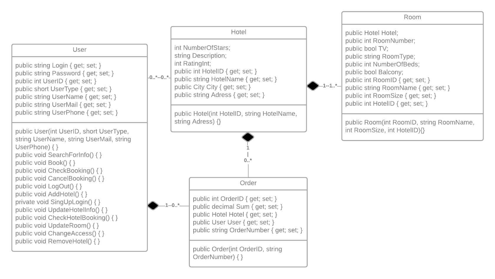

Проектування ПЗ
-
User, Unauthorized, Authorized, Admin, HotelAdmin, HotelOwner - мають зв'язки наслідування.
Композиція Rooms-Booking: Кімната може мати скільки завгодно бронювань, а Бронювання стосується тільки однієї кімнати; Бронювання не може існувати без кімнати.
Композиція Authorized-Booking: Авторизований користувач може мати скільки завгодно бронювань, а Бронювання належить тільки одному Авторизованому; Бронювання не може існувати без Авторизованого.
Композиція Countries-Authorized: Авторизований користувач може належати до однієї Країни, а Країна може мати скільки завгодно Авторизованих; Авторизований не може існувати без Країни.
Композиція Countries-Hotels: Готель може належати до однієї Країни, а Країна може мати скільки завгодно Готелів; Готель не може існувати без Країни.
Композиція Hotels-Reviews: Ревью може належати тільки до одного Готелю, а Готель може мати скільки завгодно Ревью; Ревью не може існувати без Готелю.
Композиція Hotels-HotelAdmin: Адміністратор готелю може належати хоча б до одного Готелю, а Готель може мати скільки завгодно Адміністраторів готелю; Адміністратор готелю не може існувати без Готелю.
Композиція Hotels-HotelOwner: Власник готелю може належати хоча б до одного Готелю, а Готель може мати тільки одного Власника; Власник не може існувати без Готелю.
Композиція Hotels-Rooms: Готель може мати скільки завгодно Кімнат, а Кімнат може належати тільки одному Готелю; Кімната не може існувати без Готелю.
Композиція Authorized-Reviews: Ревью може належати тільки одному Авторизованому, а Авторизований може мати скільки завгодно Ревью; Ревью не може існувати без Авторизованого.